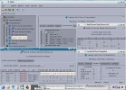
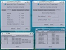
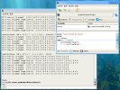

Current version: 4.1
Last updated: 7 March 2004
Current version: 4.1
|
|
As of version 3.95 (12 October 2003), the user interface has been completely rewritten in C++ (using the KDE libraries). Furthermore, scripting in Regina now uses standard Python, not Jython. As a result, Regina should be somewhat easier to build, install and support than it has been in the past.
Its primary uses (in the author's opinion) include:
|  | Normal surfaces, angle structures, structural analysis and algebraic properties (from version 3.97) |
|  | Skeletal information and other triangulation properties (from version 3.95) |
|  | In-built Python scripting (from version 3.97) |
Before you download, be sure to visit the system requirements page. Regina needs several other pieces of software installed before it will run.
The source archive regina-version_src.tgz can be downloaded from the SourceForge project site. This unpacks into the directory regina-version/, which contains a file README.txt containing instructions for compiling the application. If you have trouble compiling or running Regina, you can check the troubleshooting page to see if your problem is discussed there.
Be aware of the GNU General Public License, which is also contained in the downloadable archives.
Note that some GNU/Linux distributions may offer packages for Regina (certainly Debian does).
Alternatively, the reference manual can be viewed here online with any web browser.
There is also extensive API documentation available for the calculation engine. This is useful for Python scripting or for building the Regina calculation engine into your own projects (the calculation engine is provided as a shared library).
The API documentation will be built and installed with Regina, as long as you have Doxygen installed (see the system requirements for details). Alternatively, it can be viewed here online with any web browser.
Other mailing lists have been created for user support and development discussons; see below for details.
Alternatively, if you have written additions yourself and think they could be useful in the general release, I would love to hear about them. The more the merrier! It's probably worth mailing me first though in case I or someone else have already written said addition and it's currently being debugged and two days away from release.
Incidentally, even if you have no comments to make, I'd like to hear from anyone using the program - even if it's just to say hi - mainly because I'm interested to see who's using it and how it's being used.
The best way to contact me is by email at bab@debian.org. But even better, you could use the SourceForge services which include a bug tracking system and mailing lists; this way you can ensure your problems and/or discussions are publicly archived to help others with similar issues.
{kind=link}
{kind=link}
{kind=link}